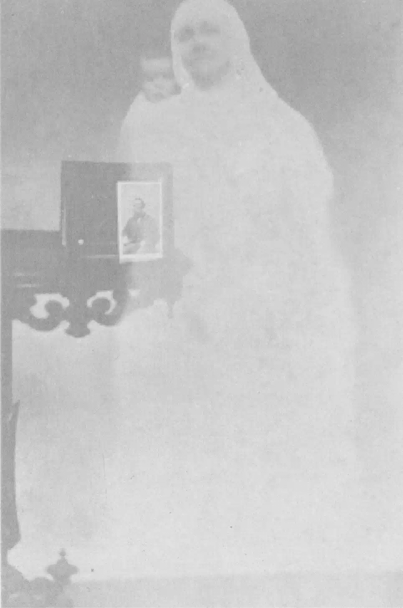

This essay exists as an act of forming a memory of the unfamiliar, and as an exploration of presence — how it finds a way to reveal itself without its author, storyteller or original context.
The process of printing, scanning, framing, zooming in, putting apart and together again — as much as a tool, became a method of storytelling. Creating a coherent narrative that sequentially finds its way through scattered dishes, ghostly embraces and posed rows of glaring eyes, planting a feeling of familiarity in the unfamiliar.
This documented exploration comes to a question of itself — What does it mean to remember, feel alive in a memory not of our own?
For this text is the despair of the image, and worse than a blurred or fogged imgae — a ghost image...
After many hours, spread across many afternoons you have found yourself sitting in front of a lit-up screen of greens and blues, harsh for the eyes at this time of day, yet unable to stray them away. You have found yourself lurking in the corners of strangers’ houses, hidden away in piles of dirty dishes, ruffled sheets, moved chairs and beneath table cloths. After many late-night hours, you begin to seem to recognise corners of rooms that are not yours, yet they might as well have been. There is a sudden need — your lips trying to remember a name you do not seem to know, eyes shut, trying to read a face you may not have seen.
Photographs taken from Flickr groups “356 daily”, “banal”, “household” — by multiple anonymous users, collected over time from September 2025 until April 2026.
A stranger’s hand grasped within your own, sat around a table, round or rectangular or any shape at all for that matter, with calls of the world beyond (or above as some would prefer). those sat to the left or right of you — with their hands warm, their mouth calling names you might have never heard of before, names called alongside that of your grandmothers and great-grandfathers — their arms reaching for what could be that of their sisters, hoping to feel back the warmth of their breath and the hum of their fingers tapping along the cloth of the table. You are sat there, with an abrupt flash blinding all senses for no longer than a second, there with a lingering weight, laid heavy on your shoulders and chest.

By William Hope and William H. Mumler — photographs made upon the request of those pictured, dating from the 1860s until 1930s.
One of many afternoons, sat at a clothed table, a leather cover you recognise from all of many afternoons before. Great aunt’s firm hand with a golden piece, hugging the same ring finger as it always has. I am desperately trying to call out the face that Great Aunt’s finger is pointed at, before she does so herself, but my attempts are deemed unsuccessful once again. My eyes are met with a person in flat whites and greys once more, seeing their eager eyes, expecting to be greeted by a name — eagerness met only by the slow pace of Great Aunt’s words filling the kitchen air once again. I glance at my mother to my left — seeking the familiar confusion of furrowed eyebrows and scrunched nose, but met with no such. She seems to have sat through more of those long afternoons than I have, so in defeat, I return my gaze to plastic covers and glaring greys.
Initially used pictures of my own family archive — replaced with a found Internet Archive image collection of strangers at various gatherings, trying to mimic those of origin.
What I have read — before, during or after having written each of the segments — accompanied by unedited notes on how I relate them to the essay:
I
Guibert, Hervé, Ghost Image, 1981 — where the photograph exists only as absence, as longing.
Steyerl, Hito, In Defense of the Poor Image, 2009 — circulating images that have lost their origin and gained a collective life. Ownerless, authorless, but evocative, reaching myth.
Manovich, Lev, The Language of New Media, 2001 — the database replacing narrative as the primary cultural form.
Aby, Warburg, Mnemosyne Atlas, 1927 - 1929 — images arranged without captions producing meaning through atmosphere and juxtaposition alone, where the atlas becomes a séance.
Suter, Batia, Parallel Encyclopedia 1, 2007 — image sequencing, narrative through visual cues and unified image treatment.
II
Warner, Marina, Phantasmagoria, 2006 — conjuring presence from absence, early spectacle as trickery, the ghost as a child of grief.
Guibert, Hervé, Ghost Image, 1981 — despair of an image to be.
Sontag, Susan, On Photography, 1977 —photographs as always carrying death, being a trace of something that no longer exists. The séance is already inside the medium itself.
III
Batchen, Geoffrey, Forget Me Not, 2004 — about vernacular photography, the album, the annotation. Photographs in family archives were never meant to stand alone, always accompanied by spoken memory.
Assmann, Aleida, Cultural Memory and Western Civilization, 2011 — distinction between living memory (carried by a human body, dies with it) and archive memory (stored, ownerless, waiting). Archive keeper(narrator) as living memory.
Barthes, Roland, Camera Lucida, 1980 — the photograph as always pointing to something absent, always saying this was. His concept of the punctum as the detail that is yours alone, non-relatable to another viewer.
Sources, that were each examined, printed, scanned, cropped, zoomed in or in all ways transformed:
I
Flickr groups: “365 daily”, “banal”, “household” images uploaded by Sarah Wonderling, Ania Vouloudi, FotoJobo, Patrick Clelland, 0bleus, Sophie, Sandrine CPK, Gianni Mazzarelli, Rui Pina, 曾義欽, Somebody’s Watching you, howdymachine, Gaelle Encrenaz, Kyle Morrissey,William Devine
II
Photographs of William Hope, William H. Muller.
III
Flickr groups: “found photograph”, “vernacular photo” images uploaded by Bookbook48, Suzanne, Edward Eugene Masters, Mark Susina, Vintage Ladies, Thomas Hawk, Dennis Morgan.
Family archive kept by my great aunt, photographed and sent to me by my mother.
Who is Dreaming of Whom?
Maja Usak — 2026, KABK (Royal Academy of Art, The Hague) Graphic Design
Images:
Flickr groups (356 daily, banal, household, vernacular photo, found photograph), William Hope / William H. Mumler, Internet Archive — all images have been printed and scanned.
The family archive in chapter III has been replaced with found images.
Typefaces:
EB Garamond, designed by Georg Mayr-Duffner and Octavio Pardo and Broadsheet, designed by Brian Willson.
Proofreading:
Mads Rosairus, Zoë Zer Yinn Ng Gschmaiss.
AI was used for grammar check.
Most importantly, thank you, Dirk Vis for the space, the collective readings and workshops, many conversations and for knowing what we needed before we did. Simnikiwe Buhlungu & Thomas Buxó for guidance from the very beginning and for whats to come.
Zoë Zer Yinn Ng Gschmaiss for the closest support and becoming the other half of a project-to-be. Anna Silva Zeller, Meabh O’Halloran, Theodora Fisher & Mads Rosairus for four years of talks, comments, shared desks, classes and projects.